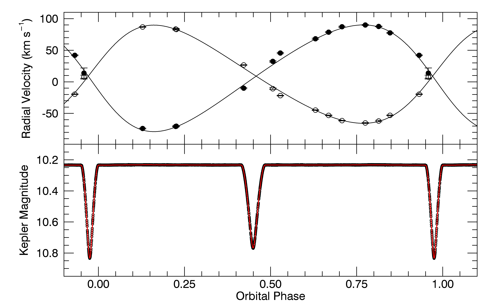
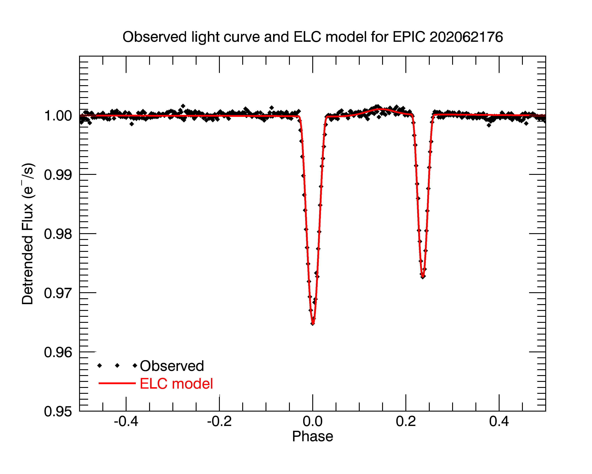

Research
my CV
my publications on NASA/ADS
LinkedIn profile
ResearchGate profile
EXOPLANET HOST BINARIES FROM K2 & TESS
For my postdoc project, I am studying how host star binarity affects planet formation and survival. As part of the speckle group at Ames, I help conduct follow-up high resolution imaging of planet candidate host stars found by TESS using the Alopeke & Zorro speckle cameras at Gemini N & S. We found that binaries that host planets have larger separations than field binaries. We also found an observational bias against detecting small (<2 Re) transiting planets, because they are hidden in the glare of the binary stars.


I also started a long term monitoring campaign of close binary stars found to host exoplanets by Kepler, K2, & TESS. We measure the relative astrometric positions of each binary using speckle interferometry at Gemini, as well as the stellar radial velocities with WIYN/NEID and APF/Levy. Our goal is to measure the binary orbit of each system to determine what binary configurations are amenable to planet formation.


Visual Orbits of Spectroscopic Binaries
For my PhD project, I determined the visual and spectroscopic orbits for 8 double-lined spectroscopic binaries by combining echelle spectroscopy from the APO 3.5m and CTIO 1.5m with long baseline interferometry from the CHARA Array.
The fundamental parameters of eclipsing binary stars are used to test stellar evolutionary models by comparing the observed and predicted stellar parameters, such as mass, radius and temperature. However, most eclipsing binaries have short orbital periods, which implies that the stars probably interacted in their early phases and are currently subject to tidal forces. So, it is not clear how applicable the parameters of close binaries are to evolutionary models of single stars. The solution to this problem is to expand binary star studies to longer period systems that are widely separated and not interacting. This requires the measurement of a visual orbit to estimate the orbital inclination, which is then combined with the spectroscopic elements to find masses.


Read more at Lester et al. 2019a, Lester et al. 2019b, Lester et al. 2020, or watch a video of my talk at GRAM 2018.
A Photometric, Spectroscopic and Apsidal Motion Analysis of BW Aqr

Eclipsing binary systems showing apsidal motion can be used to test the internal structure
predictions of stellar evolution models. For this purpose,
we present a photometric and spectroscopic analysis of the eclipsing binary BW Aquarii, an evolved
F-type binary with slow apsidal motion. We model the K2 C3 light curve using the Eclipsing Light
Curve code to determine several orbital and stellar parameters, as well as measure the eclipse times
to determine updated apsidal motion parameters for the system. Furthermore, we obtain high-resolution
spectra of BW Aqr using the CHIRON echelle spectrograph on the CTIO 1.5m for radial velocity analysis.
We then reconstruct the spectra of each component using Doppler tomography in order to determine the
atmospheric parameters. We find that both components of BW Aqr are late F-type stars with M1 =
1.365 +/- 0.008 Msun, M2 = 1.483 +/- 0.009 Msun, and R1 = 1.782 +/- 0.021 Rsun, R2 = 2.053 +/- 0.020
Rsun. We then compare these results to the predictions of several stellar evolution models, finding
that the models cannot reproduce the observed properties of both components at the same age.
Read more at
Lester & Gies. 2018, AJ, 156, 8
K2 C0 Eclipsing Binary near EPIC 202062176

We completed a photometric and light curve analysis of an eccentric eclipsing
binary in the K2 Campaign 0 feld that resides in Sh 2-252E, a
young star cluster embedded in an H II region. Because there dozens of stars in this embedded
cluster fall within the Kepler aperture, we obtained spectra of the three brightest stars in the
crowded aperture to identify which is the binary system. We found that none of these stars are
components of the eclipsing binary system, which must
be one of the fainter nearby stars. However, these bright cluster members
all have remarkable spectra: Sh 2-252a (EPIC 202062176) is a B0.5 V star with
razor sharp absorption lines, Sh 2-252b is a Herbig A0 star with disk-like emission
lines, and Sh 2-252c is a pre-main sequence star with very red color.
Read more at
Lester, Gies, & Guo. 2016, AJ, 152, 194